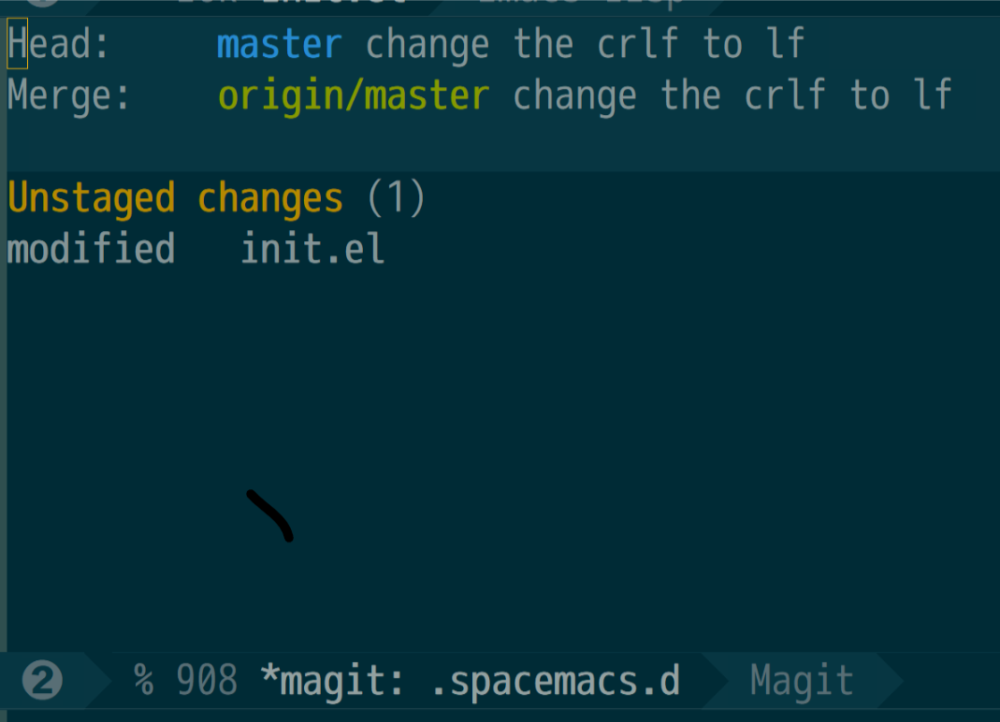
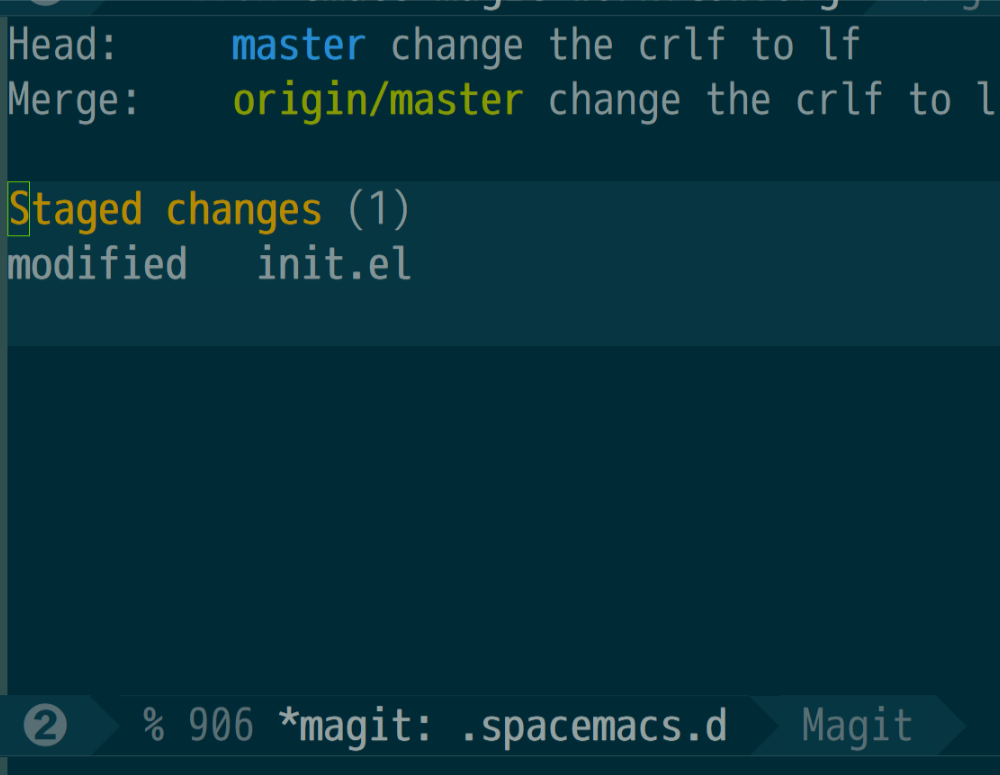
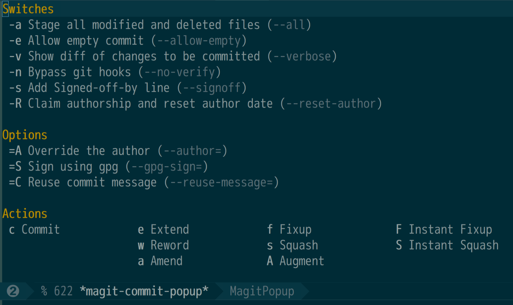
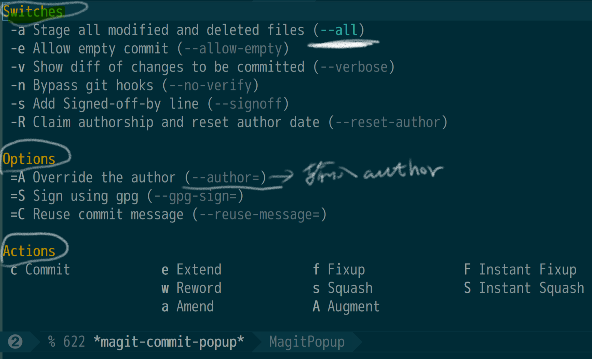
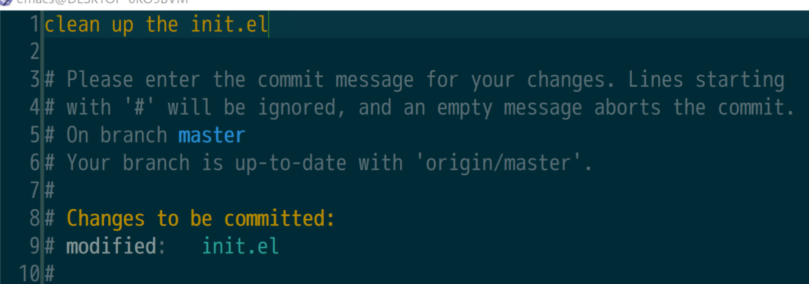
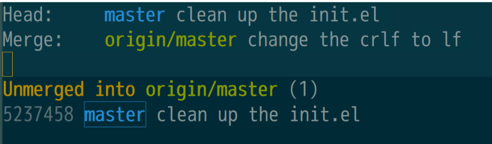
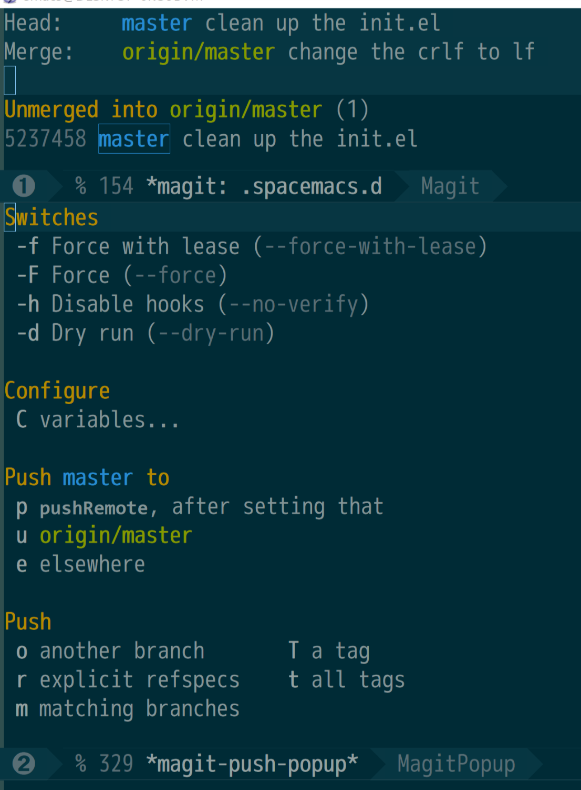
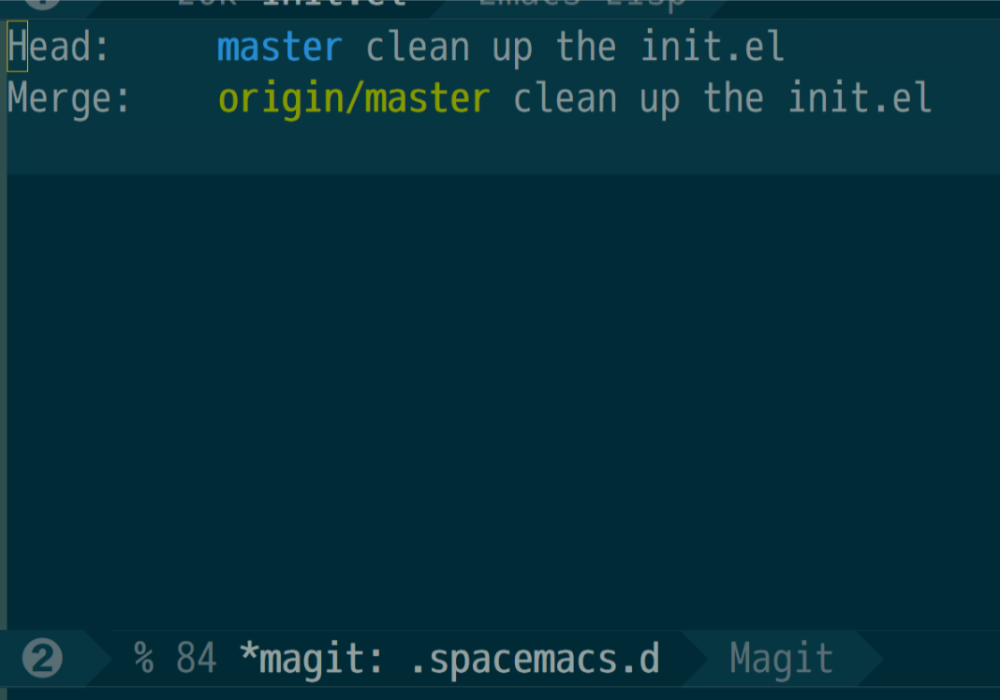

emacs + magit 工作流程
1 Magit
magit 是Emacs的一个强大的 git前端。许多复杂的git指令在magit中是一系列单键操作的快捷键。正因为如此，magit不针对git初级用户。使用magit之前，要求你对git的基本指令有所了解，保证在按下每一个键的时候知道你在做什么。一旦熟悉，则天下武功唯快不破。酣畅淋漓的操作，令在做的git各位前端瞬间黯然失色。
2 一个简单的流程
我使用git管理几个位于github的仓储。工作流程如下：
- 修改本地仓储
- stage这些修改
- 提交这些修改
- push到远端github
现在以我的Emacs配置为例，记录这四个步骤涉及的快捷键。首先， 修改本地仓储不牵涉任何git操作。任何修改都会被保存， spc g s 会把当前仓储的状态显示出来：

图 1: stage之前的 spc g s 结果
如果要 stage init.el中的修改，按下 s , 状态会变为：

图 2: stage之后
提交， c ,按下 c 的时候，会弹出一个与提交相关的选项列表：

图 3: commit 选项
如果此时你需要 stage all modified and deleted files （switches 中的第一项）,按下 -a ; 如果需要 override the author (Options 第一项), 按下 =A ，看到了么？就像自助餐一样，如果选项选择完毕，选中的那些选项会变成另外的颜色：

图 4: commit 选项选择完毕
接下来就是在Actions区域选择一个你要执行的动作了，我们要commit，就按下 c . 这个时候会弹出一个新的buffer，让你输入这次提交的备注信息。

图 5: 输入提交信息
提交信息输入完毕，在本地的修改记录算是修改完成。 spc g s 的状态是：

图 6: 输入提交信息之后
此时我们还需要把本地的修改 push到远端的 github，按下 p ，弹出：

图 7: push 选项
我需要推送到远端的 origin/master ，所以按下 u . 接下来就是推送过程了，推送结束后， spc g s 显示：

图 8: push完成
3 总结
一个最小的 magit 流程包括：
spc g s打开magitbuffer 查看仓储状态；sstage 当前修改。c提交当前修改。ppush当前修改。
4 注意事项
我的工作环境是：
- Emacs 25.1
- windows 10
- Git for windows （不要用cygwin的git）
值得注意的是，使用cygwin的git，emacs会报错 fatal： sprawning new process 。